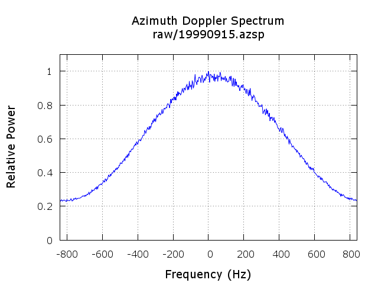

(ANSI-C program) azsp_IQ.c
NAME
azsp_IQ - Doppler centroid
estimation using SAR I/Q raw data.
SYNOPSIS
azsp_IQ <SAR_par>
<PROC_par> <signal_data> <spectrum> [loff]
[roff] [nsub] [ambig_flag] [namb][pltflg]
| <SAR_par> | (input) SAR sensor parameter file |
| <PROC_par> | (input) MSP processing parameter file |
| <signal_data> | (input) input uncompressed IQ raw SAR data file |
| <spectrum> | (output) output azimuth spectrum (text format) |
| [loff] | number of lines offset to start of estimation window (default=0) |
| [roff] | range samples offset to center of estimation window (enter - for default: center_swath) |
| [nsub] | number of azimuth subapertures for spectrum estimation (enter - for default: 24) |
| [ambig_flag] | Doppler ambiguity resolution mode: 0 = add multiples of PRF specified by the namb command line parameter 1 = use unambiguous Doppler centroid estimate from the PROC_param file (default) |
| [namb] | number of multiples of the PRF to add to the ambiguous
Doppler estimate (enter - for default: 0) |
| [pltflg] |
azimuth spectrum plotting
flag: 0: none (default) 1: output plot in PNG format |
azsp_IQ ERS1_ESA.par
p19920505.slc.par 19920505.raw 19920505.azsp 0 - - - 1 0 1
Estimate the doppler centroid using the periodogram method.
The radar azimuth spectrum will be plotted to a file in PNG
format by setting the value of the pltflg parameter.
DESCRIPTION
This Doppler centroid estimation program processes raw SAR data
and obtains an accurate estimate of the Doppler centroid by
summation of azimuth power spectra. For a block of 512
range values, azimuth FFTs are calculated and averaged to obtain
the estimate of the Doppler spectrum. The Doppler spectrum as a
function of the normalized azimuth Doppler frequency is written
to an output text file. It is also possible to plot the azimuth
spectrum to a file and also to display the spectrum on the screen
by setting the pltflgt
The MSP processing parameter file is updated with the estimate
of the Doppler polynomial constant coefficient.
In cases where the unambiguous Doppler centroid is greater
than the PRF/2 (PRF= SAR pulse repetition frequency)
or less than the -PRF/2, it is necessary to add the appropriate
multiple of the PRF to the value. The Doppler is ambiguous
because the PRF is insufficently high. No aliasing occurs in the
data because the sampling rate is greater than the azimuth
bandwidth. The program dop_ambig
obtains an approximate estimate of the unambiguous Doppler
centroid that can be used by azsp_IQ to resolve the
number of multiples of the PRF to add to the Doppler estimate.
dop_ambig uses the mult-ilook crosscorrelation (MLCC) or
multi-look beat frequency (MBLF) algorithm to resolve the
unambiguous Doppler centroid.
Another way to estimate the ambiguity number is to perform
autofocus on the range compressed data. The autofocus program
af estimates the uncompensated range
migration between the generated azimuth looks. If this exceeds
half of the expected range migration caused by an ambiguity
error, the doppler centroid is updated by the estimated number of
multiples of the PRF. This is the best way to estimate the
ambiguity for scenes with some contrast.
Plotting of the spectrum is controlled by the pltflg command line parameter. When the pltflg is 1, the azimuth spectrum plot is stored as an image in PNG format.

SEE ALSO
af, dop_ambig, typedef_MSP.h, MSP Processing Parameter File.